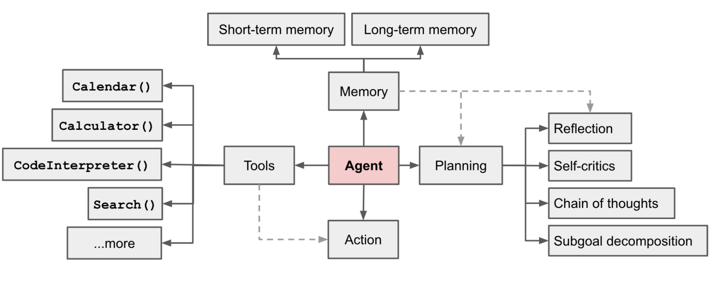
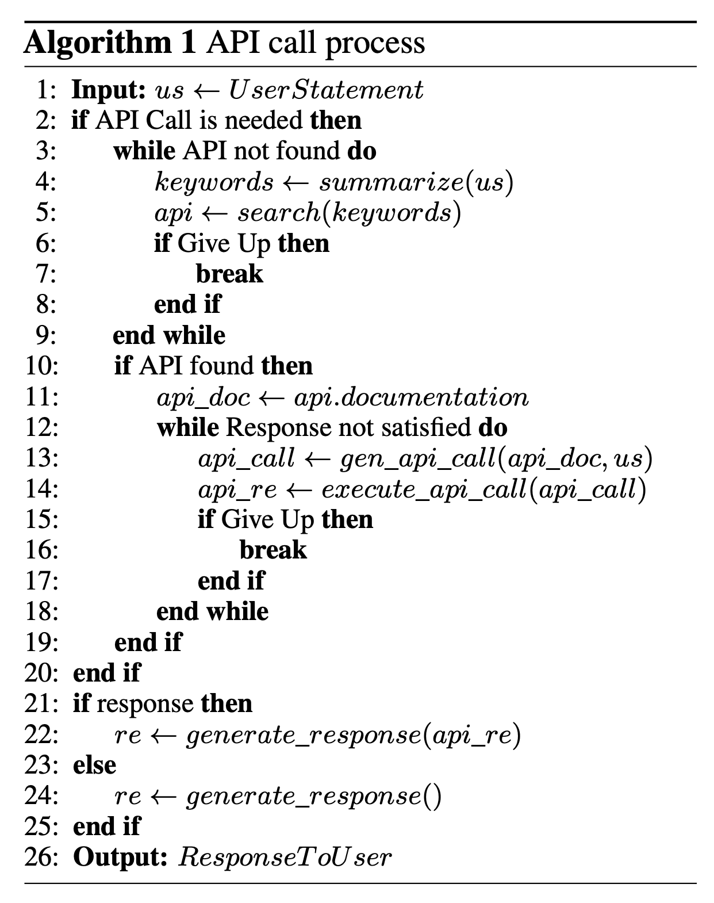
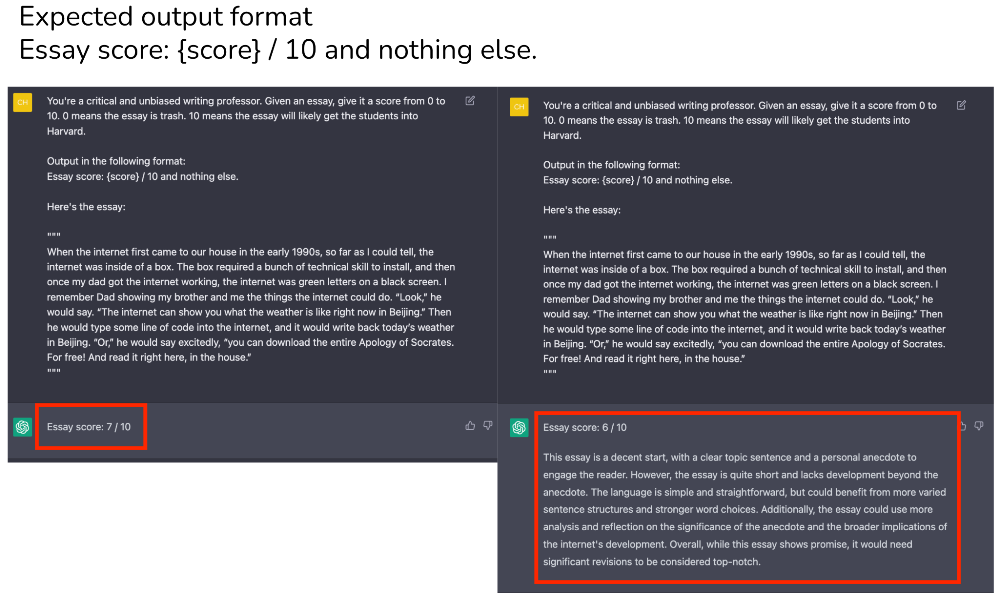
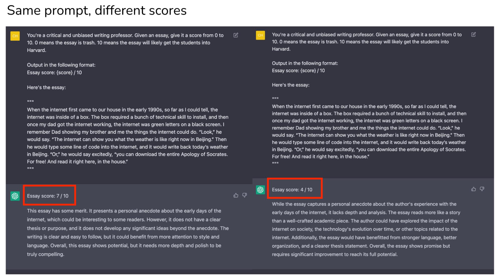

Original Google Slides (well-formatted) Quarto version may have some slides missing or poorly formatted
An agent __ may external APIs for extra information that is missing from the model weights (often hard to change after pre-training), including current information, code execution capability, access to proprietary information sources and more.__

Modular Reasoning, Knowledge and Language (MRKL) - A neuro-symbolic architecture for autonomous agents. A MRKL system is proposed to contain a collection of “expert” modules and the general-purpose LLM works as a router to route inquiries to the best suitable expert module. These modules can be neural (e.g. deep learning models) or symbolic (e.g. math calculator, currency converter, weather API).
Demonstrated that the LLM knowing when to and how to use the tools are crucial.
Tool Augmented Language Models (TALM) __ - Fine-tuned LLM to call tools. Mentioned in Ch 27.__
__ __ Toolformer - Fine-tuned LLM to call tools.
ChatGPT Plugins __ and __ OpenAI API function calling __ are good examples of LLMs augmented with tool use capability working in practice. The collection of tool APIs can be provided by other developers (as in Plugins) or self-defined (as in function calls).__
HuggingGPT - Framework using ChatGPT for Task Planning, Expert Model selection, Task Execution, and Response Generation.

API-Bank __ - Benchmark to evaluating the performance of tool-augmented LLMs. Uses many commonly used API tools, tool-augmented LLM workflow, annotated dialogues, API calls, etc. __
Includes tools such as search engines, calculator, calendar queries, smart home control, schedule management, health data management, account authentication workflow and more.
Because there are a large number of APIs, LLM first has access to API search engine __ to find the right API to call and then uses the corresponding documentation to make a call.__
LLM’s can output tokens that can be parsed by other programs, such as JSON.
A program can recognize the tokens, and use this as a trigger to call another software tool.
Example of LLM (ChatGPT) output instructions used to control a robot:
Lets say you want to build an LLM app:
Write a template with a prompt, and a section to take a certain input.
Ie “Your are a helpful search engine. Summarise this search result page in less than 10 words.”
Make changes to app. Test different LLM parameters.
It’s frustrating , takes up a lot of time, and often requires lots of trial and error _ to achieve _ optimal results.
Check if result is still good. If not, then modify prompt.
Repeat until all outputs are good.


Lets say you want to build an LLM app:
Write a template with a prompt, and a section to take a certain input.
Ie “Your are a helpful search engine. Summarise this search result page in less than 10 words.”
Make changes to app. Test different LLM parameters.
It’s frustrating , takes up a lot of time, and often requires lots of trial and error _ to achieve _ optimal results.
Check if result is still good. If not, then modify prompt.
Repeat until all outputs are good.
LLM output can vary widely based on:
Random number generator, and word chosen (stochastic unless temperature = 0).
LLM training.
Prompt wording (small changes can give very different results).
Write Prompt
Clearly state instructions so the LLM will give the output correctly.
Make changes
Change the LLM, data, use cases, parameters, etc.
Consider example input and output, and how the output will affect the use case.
Prompt Engineering
Assess Results
Compare to example desired inputs and outputs, and make any relevant __ metrics.__
Instead of, when changes are made, trying different prompts many times to get a certain output, and rewriting prompts to get better results, what if we could automate this process?
Why don’t we specify examples of input and output, and define a metric for how good the results are. Then we can use an automated system to try different prompts and pick the best one.
DSPy can automate the process of trial and error __ to find test various prompts, and use an optimization metric or examples to determine which prompt is best. This can occur every time the LLM is called.__
On every LLM call , in addition to the regular output, DSPy can assess how good the output is, and write a better prompt __ based on the examples or quality metrics.__
DSPy abstracts the prompt so the programmer does not have to write the prompt. DSPy writes, manages, and improves the prompt automatically based on a specified syntax. Prompts may be improved automatically based on a quality metric or examples.
Let’s say you’re building a customer support chatbot. Instead of writing specific prompts, with DSPy you might define your intent like this:
Understand the customer’s question.
Retrieve relevant information from the knowledge base.
Generate a helpful, empathetic response.
Check if the response answers the original question.
If not, refine the answer.
DSPy would then handle:
Crafting optimal prompts for each step.
Managing the flow of information between steps.
Optimizing the overall process for accuracy and consistency.
Code :
math = dspy.ChainOfThought(“question -> answer: float”)
math(question=“Two dice are tossed. What is the probability that the sum equals two?”)
Possible output:
Prediction(
__ reasoning=‘When two dice are tossed, each die has 6 faces, resulting in a total of 6 x 6 = 36 possible outcomes. The sum of the numbers on the two dice equals two only when both dice show a 1. This is just one specific outcome: (1, 1). Therefore, there is only 1 favorable outcome. The probability of the sum being two is the number of favorable outcomes divided by the total number of possible outcomes, which is 1/36.’,__
__ answer=0.0277776__
)
Prompt is handled automatically, and can be improved on each call based on given metrics.
Langchain - Framework for building LLM-powered applications. Provides abstractions to chain together interoperable components and third-party integrations to simplify AI application development, for modular and maintainable LLM programs.
Demo: __ __ https://www.kaggle.com/code/ritvik1909/dspy-langchain
Cognition AI is a company that is building an AI system that can control a computer and software engineering tools to perform software engineering tasks. The AI software engineer is called Devin.
I feel that software engineering will slowly decrease significantly as a profession over several years.